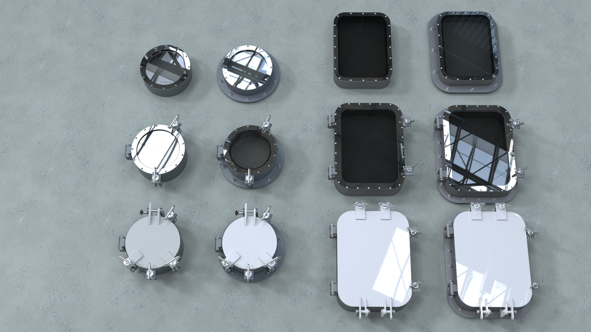

Marine Application
Designed for vessel superstructures, accommodation areas and technical spaces.
Marine-grade fixed side scuttle engineered for watertight performance, durability and project-based flexibility.
This product page is prepared for sample showcase use. Final dimensions, material selections and certification scope may vary depending on project requirements.
Drag to rotate · Scroll to zoom · View the model interactively
Designed for vessel superstructures, accommodation areas and technical spaces.
Developed with sealing and fastening arrangements suitable for marine service conditions.
Available with aluminium, steel, stainless steel or brass frame configurations.
Can be adapted for welded, bolted or clamp-type installation requirements.
The product can be presented with different frame styles, deadlight arrangements, glass types and installation concepts depending on the vessel and project scope.


Karaca fixed side scuttles are developed for marine use where a compact, durable and watertight glazing solution is required. The system combines robust frame construction, reliable sealing and flexible production options.
Depending on project requirements, the unit can be supplied with different glazing types, frame materials and installation arrangements. The deadlight option provides an additional protective layer and supports use in demanding onboard conditions.
Karaca side scuttles can be tailored according to project requirements, including frame material, glass type, deadlight arrangement, surface finish and installation method.
Attach technical drawings, datasheets or certificates here as the final files become available. For now, this page is ready as a product showcase template.
Technical drawing and product datasheet buttons can be added once the final public PDF files are selected.